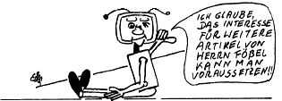

Nascom Journal |
Oktober 1981 · Ausgabe 10 |
sauberer TTL-Pegel, Die Bruchstelle kann dann mit dem Ohmmeter noch genau lokalisiert werden. Sollte die Verbindung dennoch in Ordnung sein, so würde dies auf einen Defekt am Ausgang des treibenden ICs bzw, am Eingang des angeschlossenen ICs hindeuten, was durch wahlweises Herausnehmen eines ICs noch genau bestimmt werden kann.
Ein kurzes Beispiel an einem Nascom 1 mit dem Betriebssystem NAS-SYS mag diese Fehlersuche noch ein wenig verdeutlichen, Die Hilfsschaltung ist angeschlossen, d.h. der Prozessor wurde inzwischen angehalten und nach dem Reset und einem ersten Tastendruck auf S2 wird genau dort gestoppt, wo der Prozessor sein erstes Befehlsbyte vom Monitor-ROM holt. Folglich wird auf dem Adreßbus 0000 anliegen, auf dem Datenbus wird vom ROM her die 31H liegen, die READ-Leitung muß log„0“ aufweisen, die WRITE-Leitung log„1“, die MREQ auf log„0“ und die I/ORQ-Leitung auf log„1“. Diese Pegel sind dorthin zu verfolgen, wo sie evtl. benötigt werden.
Ist soweit alles in Ordnung wird kurz S2 gedrückt. Auf dem Adreßbus muß 0001 erscheinen und auf dem Datenbus, laut Monitorlisting, 00. Durch dieses Vorgehen wird also der Mikroprozessor sofort beim nächsten Speicherzugriff wieder angehalten.
Aber auch größere Sprünge, nämlich bis zum nächsten I/O-Befehl, die ebenfalls im Monitorprogramm vorkommen, sind möglich. Dafür wird einfach die MREQ-Leitung zur Zusatzschaltung unterbrochen und ein WAIT-Signal kann folglich erst beim nächsten IORQ erzeugt werden.
Zusätzliche Überlegungen sind dann erforderlich, wenn die Signale auf ihrem Weg zu den Adressaten noch verschiedene Funktionsgatter durchlaufen (z.B. UND-, ODER-Gatter, Multiplexer für IC-Auswahl in der RD- oder WR Leitung usw.). Dies ermöglicht dann gleichzeitig, diese verschiedenen Gatten auf ihre Funktionsfähigkeit zu überprüfen.
Damit sind aber die Möglichkeiten der Fehlersuche mit diesen Hilfsmitteln bei weitem noch nicht erschöpft, Sollte Interesse bestehen, kann ich noch ausführen, wie sich z. B. der Einsatz eines selbstprogrammierten EPROMs an Stelle des Monitor-ROMs lohnen kann. (Mit den drei Befehlen LD A,FF; ST A 0C00; LD A,0C00 kann die Funktionstüchtigkeit des wichtigen RAM-Speichers für Monitorzwecke überprüft werden), EPROMs dafür könnte ich evtl. zur Verfügung stellen.
Ein weiteres Einsatzgebiet wäre das Testen von selbstentwickelten Zusatzschaltungen, bzw. Interfaceschaltungen bei funktionierendem Grundsystem. Dafür müßte das treibende Programm an den entscheidenden Stellen angehalten werden, um dann die Signale zu der neuen Schaltung im statischen Zustand überprüfen zu können. Dafür eignen sich nicht die Monitorhilfsmittel (Break, Single Step). Auch hier kann mit besagter Zusatzschaltung und einem kleinen Trick das laufende Programm gezielt gestoppt werden

| Seite 6 von 28 |
|---|